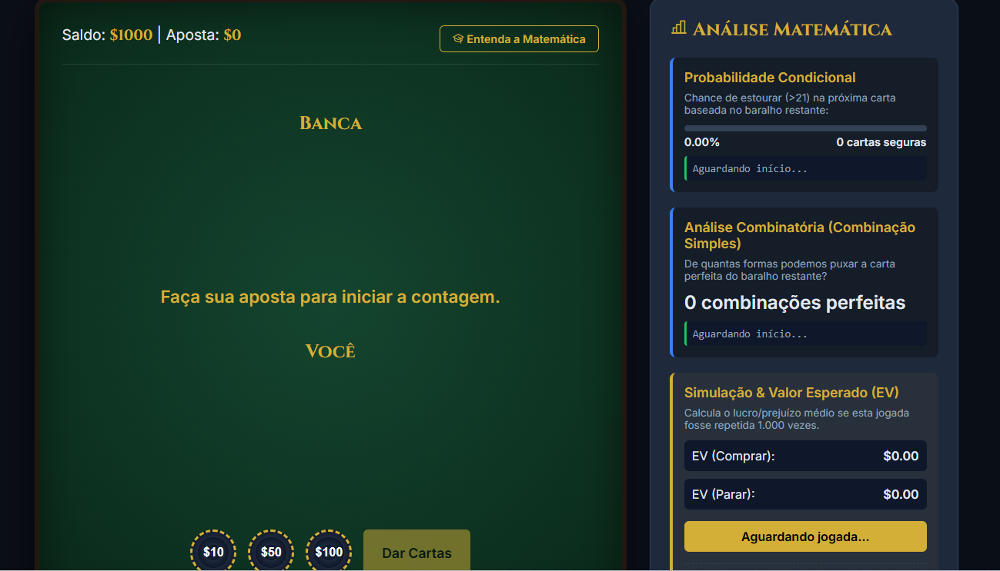
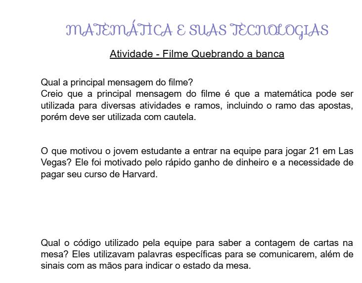

Nesta atividade em grupo, criamos um jogo original inspirado no filme Quebrando a Banca, utilizando conceitos de análise combinatória e teoria das probabilidades. Desenvolvemos regras claras, estratégias de apostas e elementos baseados em chances matemáticas para tornar o jogo desafiador e divertido. .
Habilidades e Competências

AnexoNesta atividade, realizamos tarefas baseadas no filme Quebrando a Banca, desenvolvendo reflexões e análises sobre a história apresentada. A avaliação foi feita por meio da participação durante as atividades, considerando critérios como criatividade, organização e desempenho. A proposta contribuiu para estimular o raciocínio lógico, e a interpretação. .
Habilidades e Competências

Anexo